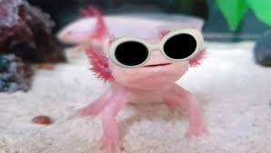
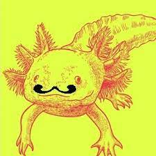
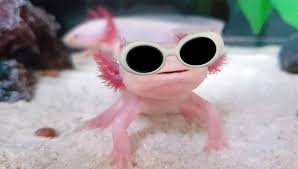
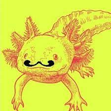

Si quieres ver mas imágenes de ajolotes, da click en el siguiente enlace.
3 cosas que los ajolotes aman
3 cosas que los ajolotes odian.
¿Tu ajolote es hembra o macho?
¿Que colores tiene tu ajolote?

 


